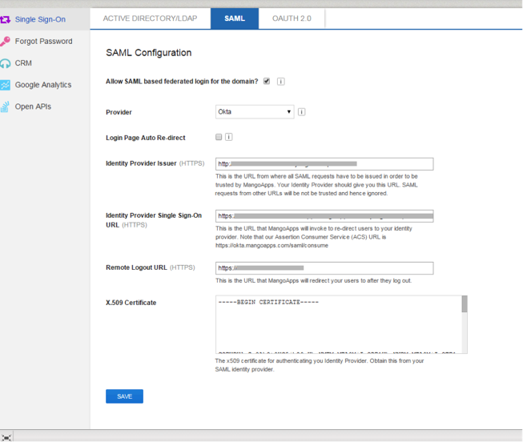

X.509 Certificate – Copy and paste the following Certificate. Be sure to include the Begin Certificate and End Certificate lines.
Sign into the Okta Admin Dashboard to generate this variable.

Note: IDP-initiated flows, SP-initiated flows, and Just In Time (JIT) provisioning are all supported.